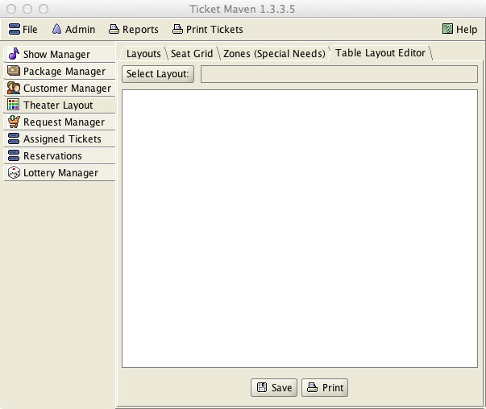
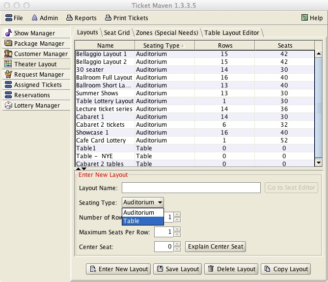
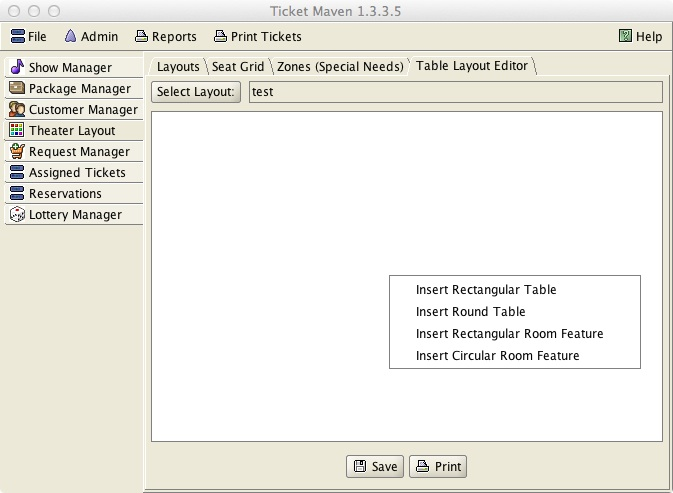
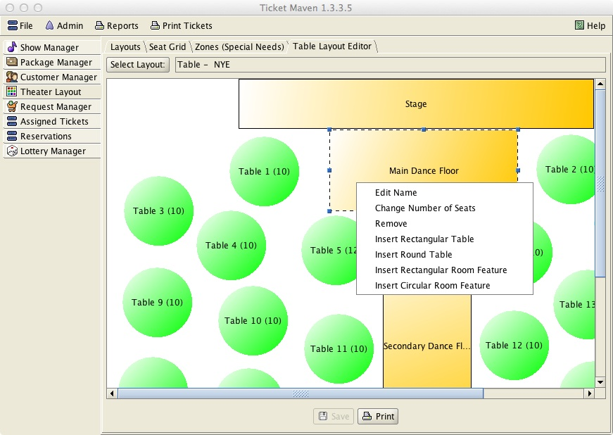
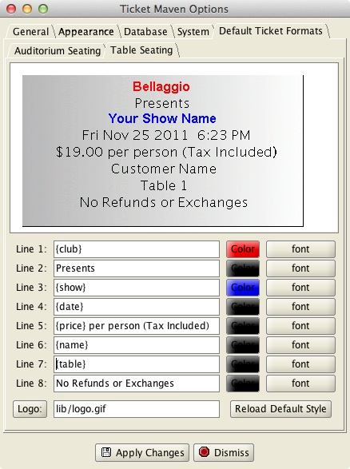
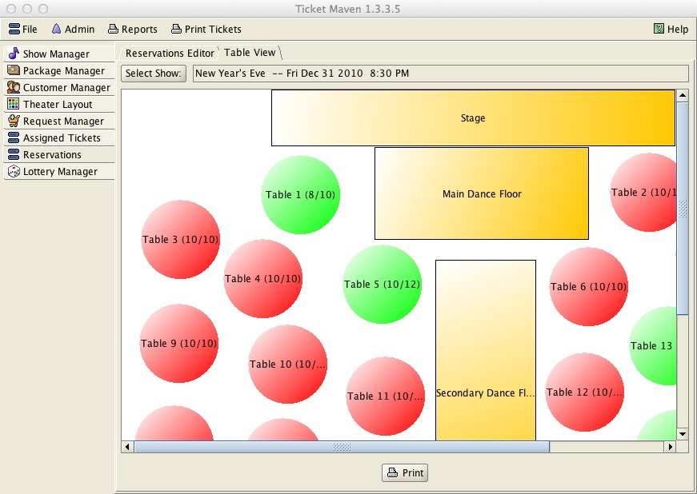
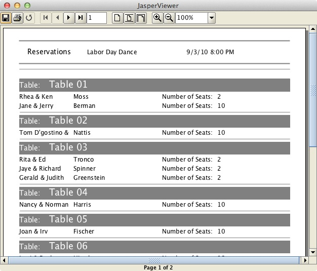

Table Seating
The program supports the creation of table layouts via the Theater Layout editor.
Creating a table layout is a two-step process.
First a new Layout is defined with a seating type of Table. Once this is saved, the user can access the Table Layout Editor tab under the Theater Layout to edit the layout.

In the Table Layout Editor, the table layout must first be selected at the top of the screen via the Layout button. Then click on “Go to Seat Editor”

Then the user can then right-click the mouse on the white area of the screen to add items to the table layout. The user can add both round and rectangular tables (which can be moved and resized as needed). The user can also add round or rectangular room features. Room features are items such as a dance floor or a buffet table that do not have customers seated at them.


Right clicking on a room feature or table will bring up further menu options to allow the item to be renamed and in the case of tables, to allow the number of seats at the table to be set.
Once a table layout is saved, it can be used as the layout for new shows.
The program does not support a lottery for shows with table seating. For shows with table seating, reservations are manually entered per customer via the Reservations tab. Reservations are made for a particular number of seats at a table. Individual seats at a table are not marked or numbered in any way.
Ticket Cards can be printed for Reservations just as they can be for regular Auditorium style shows. Under File->Options, the user can customize what prints on Reservation cards separately from regular Auditorium tickets.

The Table View tab under the Reservations tab can be used to view the table layout for a particular show. Seat assignments will be shown when the mouse hovers over a particular table.

A report of table assignments can also be printed for a show.

The program does not associate special needs with particular tables. Any special needs issues for a show with table seating must be addressed when the reservations are manually assigned.